1. Основные понятия компьютерных сетей. Цели создания компьютерных сетей. Интерфейсы.
Информационная сеть – это сеть, предназначенная для обработки, хранения и передачи данных. Она состоит из: абонентских и административных систем и связывающей их коммуникационной сети. Главная цель объединения компьютеров в сеть - совместное использование ресурсов: 1)периферийных устройств; 2)данных, хранящихся в оперативной памяти или на внешних запоминающих устройствах; 3)вычислительной мощности.
Для чего нужно создавать компьютерные сети: 1)создание и использование информационных систем общего пользования (веб-сайты, базы данных и т.д.); 2)совместное использование устройств и каналов связи (Интернет); 3)передача данных между устройствами (компьютеры, серверы и т.д.); 4)организация параллельных вычислений.
Интерфейс – формально определенная логическая и физическая граница между взаимодействующими независимыми объектами. Он задает параметры, процедуры и характеристики взаимодействия объектов. Есть физический и логический интерфейсы. ФИ определяется набором электрических характеристик сигналов и технических параметров кабеля, разъемов. ЛИ — это набор информационных сообщений определенного формата, которыми обмениваются два устройства или две программы, а также набор правил, определяющих логику обмена этими сообщениями. Линия связи – участок кабеля с разъемами. Канал связи - система технических средств для передачи сообщений от источника к получателю. Функции передачи данных по линиям связи выполняются сетевыми интерфейсными картами (Network Interface Card, NIC), называемыми также сетевыми адаптерами, и их драйверами. Чтобы приложения могли «понимать» получаемую друг от друга информацию, необходимо определить протокол взаимодействия приложений.
к вопросам2. Проблемы связи нескольких компьютеров. Выбор физической топологии. Структурированная кабельная система.
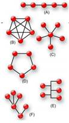Топология сети – это способ описания конфигурации сети, схема расположения и соединения сетевых устройств. Она позволяет увидеть всю ее структуру, сетевые устройства, входящие в сеть, и их связь между собой. По физической ТС различают: А) «точка-точка»; B) полносвязную топологию; C) «Звезда»; D) «Кольцо»; E) «Общая шина» F) «Дерево»; Сети со смешанной топологией.
 В основу любой полномасштабной
структурированной кабельной системы положена древовидная топология, которую
иногда также называют структурой иерархической звезды. Структурированная
кабельная система (СКС) представляет собой набор коммуникационных элементов —
кабелей, разъёмов, коннекторов, кроссовых панелей и шкафов, которые
удовлетворяют стандартам и позволяют создавать регулярные, легко расширяемые
структуры связей. Горизонтальные подсистемы – соответствуют этажам здания, они
соединяют кроссовые шкафы этажа с розетками пользователей. Вертикальные
подсистемы - соединяют кроссовые шкафы каждого этажа с центральной аппаратной
здания. Подсистема кампуса (магистральная подсистема комплекса зданий) -
объединяет несколько зданий с главной аппаратной всего кампуса. Преимущества использования СКС: 1)универсальность;
2)увеличение срока службы; 3)снижение эксплуатационных расходов; 4)надёжность.
В основу любой полномасштабной
структурированной кабельной системы положена древовидная топология, которую
иногда также называют структурой иерархической звезды. Структурированная
кабельная система (СКС) представляет собой набор коммуникационных элементов —
кабелей, разъёмов, коннекторов, кроссовых панелей и шкафов, которые
удовлетворяют стандартам и позволяют создавать регулярные, легко расширяемые
структуры связей. Горизонтальные подсистемы – соответствуют этажам здания, они
соединяют кроссовые шкафы этажа с розетками пользователей. Вертикальные
подсистемы - соединяют кроссовые шкафы каждого этажа с центральной аппаратной
здания. Подсистема кампуса (магистральная подсистема комплекса зданий) -
объединяет несколько зданий с главной аппаратной всего кампуса. Преимущества использования СКС: 1)универсальность;
2)увеличение срока службы; 3)снижение эксплуатационных расходов; 4)надёжность.
3.Проблемы связи нескольких компьютеров. Адресация узлов.
По количеству адресуемых интерфейсов адреса можно классифицировать следующим образом: 1)уникальный адрес (unicast) используется для идентификации отдельных интерфейсов; 2)групповой адрес (multicast) идентифицирует сразу несколько интерфейсов, входящих в группу; 3)широковещательный адрес (broadcast) идентифицирует адреса всех сетевых интерфейсов.
Типы адресов: 1)числовые и символьные(192.168.1.1 и fpmi.bsu.by); 2)аппаратные и сетевые(MAC-адрес, IP- адрес) 3)плоские и иерархические(MAC-адрес, IP- адрес, fpmi.bsu.by). Для преобразования адресов из одного вида в другой применяют специальные вспомогательные процедуры, которые называют протоколами разрешения адресов. Множество всех адресов, которые являются допустимыми в рамках некоторой схемы адресации, называется адресным пространством.
к вопросам4.Проблемы связи нескольких компьютеров. Коммутация (Определение потоков, определение маршрутов, коммутация в транзитном узле, мультиплексирование и демультиплексирование).
Соединение отправителя и получателя через сеть транзитных узлов называют коммутацией. Последовательность узлов, лежащих на пути от отправителя к получателю, образует маршрут. Для выполнения коммутации должны быть решены следующие задачи: 1)определение потоков данных; 2)определение маршрутов; 3)продвижение данных в каждом транзитном узле; 4)мультиплексирование и демультиплексирование потоков. Информационным потоком называют последовательность данных, объединенных набором общих признаков, который выделяет эти данные из общего сетевого трафика. Определить маршрут – это значит выбрать последовательность транзитных узлов и их интерфейсов, через которые надо передавать данные, чтобы доставить их адресату. Критерии выбора маршрута: 1)номинальная пропускная способность; 2)загруженность каналов связи; 3)задержки, вносимые каналами; 4)количество промежуточных транзитных узлов; 5)надежность каналов и транзитных узлов. Продвижение данных — это распознавание потоков и локальная коммутация на каждом транзитном узле. Транзитные узлы, предназначенные только для коммутации, образуют коммутационную сеть. Задача демультиплексирования: разделение суммарного агрегированного потока, поступающего на один интерфейс, на несколько составляющих потоков. Задача мультиплексирования: образование из нескольких отдельных потоков общего агрегированного потока, который можно передавать по одному физическому каналу связи.
к вопросам5.Классификации компьютерных сетей.
По территориальному признаку:
1.Локальные (LAN - Local Area Networks ) служат для объединения рабочих станций, периферии, терминалов и других устройств. Характерными особенностями ЛС являются: 1)ограниченные географические пределы; 2)обеспечение многим пользователям доступа к среде с высокой пропускной способностью; 3)постоянное подключение к локальным сервисам; 4)физическое соединение рядом стоящих устройств.
2.Глобальные (WAN– Wide Area Networks) объединяют компьютеры, находящиеся на больших расстояниях друг от друга: в различных городах, разных странах и на разных континентах. Используют не слишком качественные каналы связи и сравнительно низкую скорость передачи.
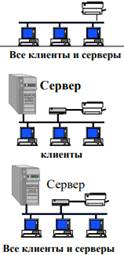3.Региональные (городские) (MAN - Metropolitan Area Networks ) предназначены для обслуживания территории крупного города. Обладают качественными линиями связи и поддерживают высокие скорости обмена, обеспечивают доступ к глобальным сетям.
Internet - это неформальное международное сотрудничество автономных взаимодействующих друг с другом сетей. Это сотрудничество обеспечивает межмашинное взаимодействие на основе добровольного соблюдения открытых протоколов и процедур
По масштабу производственного подразделения:
1.Сети отделов (рабочих групп) используются небольшой группой сотрудников (до 100-150), работающих в одном отделе предприятия. 2.Сети кампусов.
3.Корпоративные сети. сети масштаба предприятия объединяют большое число компьютеров на всех территориях отдельного предприятия Для корпоративной сети характерны: 1)масштабность — тысячи пользовательских компьютеров, сотни серверов, огромные объемы хранимых и передаваемых по линиям связи данных, множество разнообразных приложений; 2) высокая степень гетерогенности — типы компьютеров, коммуникационного оборудования, операционных систем и приложений различны; 3) использование глобальных связей — сети филиалов соединяются с помощью телекоммуникационных средств, в том числе телефонных каналов, радиоканалов, спутниковой связи.
По способу управления: 1.Одноранговые сети: пользователи выступают сами в роли администраторов. Характеристики: 1)для объединения компьютеров в сеть применяется простая кабельная система; 2)вопросы защиты не критичны; 3)потоки данных невелики ; 4)компьютер большую часть своих вычислительных ресурсов предоставляет пользователю, сидящему за компьютером.
2. Сети на основе сервера: основа – выделенный сервер, аппаратно ориентирован как сервер. Характ-ки: 1)файл-серверы и принт-серверы; 2)серверы приложений; 3)почтовые серверы; 4)Факс-серверы; 5)коммуникационные серверы (серверы удалённого доступа). Обязанности системного администратора 1)разграничение прав доступа пользователей к ресурсам сети; 2)обеспечение защиты информации; 3)предотвращение потери данных в случае сбоя электропитания; 4)периодическое копирование и архивирование данных; 5)замена оборудования в случае выхода из строя сервера или рабочей станции.
3.Комбинированные сети.
к вопросам6.Коммутация пакетов и каналов.
Коммутация каналов - образование непрерывного составного физического канала из последовательно соединенных отдельных канальных участков для прямой передачи данных между узлами. Каналы соединяются между собой коммутаторами. В сети с коммутацией каналов перед передачей данных всегда необходимо выполнить процедуру установления соединения, в процессе которой и создается составной канал, и только после этого можно начинать передавать данные. Достоинства: 1)постоянная и известная скорость передачи данных по установленному между конечными узлами каналу; 2)низкий и постоянный уровень задержки передачи данных через сеть. Недостатки: 1)отказ сети в обслуживании запроса на установление соединения; 2)нерациональное использование пропускной способности физических каналов; 3)обязательная задержка перед передачей данных из-за фазы установления соединения.
Коммутация пакетов - техника коммутации абонентов для передачи компьютерного трафика: -разбиение сообщения пользователя на пакеты-включение в пакет заголовка, содержащего адрес узла назначения и некоторую нумерацию пакета-передача пакетов по сети как независимых информационных блоков-формирование очередей пакетов на коммутаторах пакетной сети для сглаживания пульсации трафика на каналах связи. Главное отличие пакетных коммутаторов от коммутаторов в сетях с коммутацией каналов состоит в том, что они имеют буферную память для временного хранения пакетов. Режимы передачи пакетов: 1.Дейтаграммная передача: коммутатор реализует независимую маршрутизацию каждого пакета; маршрут выбирается в зависимости от состояния сети. Пример: Internet. Метод не гарантирует доставку пакета, доставка происходит с максимальными усилиями. 2.Передача с установлением логического соединения: процедура согласования двумя конечными узлами сети некоторых параметров процесса обмена пакетами, называется установлением логического соединения. 3.Передача с установлением виртуального канала: основан на частном случае логического соединения, в число параметров которого входит жестко определенный для всех пакетов маршрут. Коммутатор реализует передачу пакетов по предварительно построенному виртуальному каналу VC (virtual channel) (динамическому или постоянному). Пример: ATM.
Достоинства: 1)высокая общая пропускная способность сети при передаче пульсирующего трафика; 2)динамическое перераспределение пропускной способности физических каналов связи. Недостатки: 1)неопределенная скорость передачи данных между абонентами сети; 2)переменная величина задержки пакетов данных; 3)возможные потери данных из-за переполнения буферов.
к вопросам7.Многоуровневый подход. Протокол. Межуровневый интерфейс. Стек протоколов.
Многоуровневый подход: представление исходной задачи в виде множества модулей эти модули группируют и упорядочивают по уровням, образующим иерархию. Протокол – это формализованные правила, определяющие последовательность и формат сообщений, которыми обмениваются сетевые компоненты, лежащие на одном уровне, но в разных узлах. Межуровневый интерфейс - называемый также интерфейсом услуг, определяет набор функций (услуг), которые нижележащий уровень предоставляет вышележащему . Стек протоколов – это иерархически организованный набор протоколов, достаточный для организации взаимодействия узлов в сети.
к вопросам8.Модель взаимодействия открытых систем (модель OSI), ее назначение и функции каждого уровня.
Под открытой системой понимается сетевое устройство, готовое взаимодействовать с другими сетевыми устройствами по стандартным правилам, определяющим формат, содержание и значение принимаемых и отправляемых сообщений. Модель взаимодействия открытых систем (Open System Interconnection, OSI) разработана Международной организацией по стандартизации. Обычно применяется короткое название «модель OSI». Она определяет: 1)уровни взаимодействия систем в сетях с коммутацией пакетов; 2)стандартные названия уровней; 3)функции, которые должен выполнять каждый уровень; и не содержит описаний конкретных протоколов и их реализаций. Уровни сетевого взаимодействия:
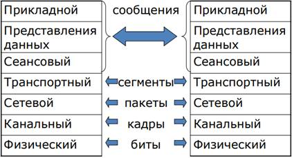Каждый уровень модели OSI имеет свою систему адресации (адресное пространство). Примеры адресных пространств: – MAC-адреса (канальный уровень); – IP-адреса (сетевой уровень); – номера портов (транспортный уровень).
• Прикладной уровень обеспечивает взаимодействие сети и пользователя, также отвечает за передачу служебной информации, предоставляет приложениям информацию об ошибках и формирует запросы к уровню представления.
• Уровень представления отвечает за преобразование протоколов и кодирование/декодирование данных, здесь может осуществляться сжатие/распаковка или кодирование данных, а также перенаправление запросов другому сетевому ресурсу, если они не могут быть обработаны локально. • Сеансовый уровень отвечает за поддержание сеанса связи, позволяя приложениям взаимодействовать между собой длительное время. • Транспортный уровень предназначен для доставки данных без ошибок, потерь и дублирования в той последовательности, как они были переданы. • Сетевой уровень предназначен для определения пути передачи данных, здесь работает такое сетевое устройство, как маршрутизатор. • Канальный уровень предназначен для обеспечения взаимодействия сетей на физическом уровне и контроля за ошибками, которые могут возникнуть. • Физический уровень предназначен непосредственно для передачи потока данных, осуществляет интерфейс между сетевым носителем и сетевым устройством.При передаче данных от приложения в сеть транспортный, сетевой и канальный уровень последовательно упаковывают (инкапсулируют) данные «внутрь» своего пакета.
к вопросам9.Сетезависимые и сетенезависимые уровни. Соответствие функций различным типам коммуникационного оборудования и уровням модели OSI.
Физический, канальный и сетевой сетезависимые, т.е. протоколы этих уровней тесно связаны с технической реализацией сети и используемым коммуникационным оборудованием. Прикладной, представительный и сеансовый сетенезависимые, т.е. ориентированы на приложения и мало зависят от технических особенностей построения сети, на них не влияют какие бы то ни было изменения в топологии сети, замена оборудования или переход на другую сетевую технологию. Транспортный уровень является промежуточным, он скрывает все детали функционирования нижних уровней от верхних. Это позволяет разрабатывать приложения, не зависящие от технических средств непосредственной транспортировки сообщений. Шлюз - аппаратно-программный комплекс: 1)функционирующий на прикладном уровне модели OSI; 2)передающий данные между несовместимыми прикладными программами или между сетями, использующими различные протоколы. Маршрутизатор - устройство, обеспечивающее трафик между локальными сетями, имеющими разные сетевые адреса: 1)функционирует на сетевом уровне модели OSI; 2) отвечает за выбор маршрута передачи пакетов между узлами. Коммутатор - устройство либо программа, осуществляющая выбор одного из возможных вариантов направления передачи данных, работает на канальном уровне контроля доступа к среде модели OSI. Повторитель - повторение сигналов, поступающих на один из его портов, на другой порт. Концентратор или Хаб – это многопортовый повторитель, реализует не только функцию повторения сигналов, но и концентрирует в одном центральном устройстве функции объединения компьютеров в сеть.
к вопросам10.Сетевой уровень как средство построения больших сетей (понятие составной сети). Адресация в IP –сетях.
Большие корпоративные сети внедряют модели иерархической сети и соответствующей структуры адресов. Структура иерархической адресации логически делит сети на менее крупные подсети. Физические подсети могут иметь различную природу и различные системы адресации канального уровня. Стек TCP/IP устроен так, что он не зависит от физической природы линий связи. IP и вышележащие протоколы абстрактны и «обязаны» работать «поверх» всех физических сетей, независимо от их природы. Сеть, образованная путем соединения нескольких подсетей разного типа, называется составной сетью. Подсеть – это целостное адресное пространство (в терминах IP-адресов). IP-адрес – уникальное число, приписываемое сетевому интерфейсу. Маршрутизатор – устройство с сетевыми интерфейсами, «смотрящими» в разные подсети. Адресация в IP-сетях: 1)локальные адреса- определяется технологией, с помощью которой построена отдельная сеть, в которую входит данный узел (МАС-адреса); 2)сетевые IP-адреса - основной тип адреса, которые используются на сетевом уровне для передачи пакетов между сетями; 3)символьные имена (DNS-имена, NetBIOS- имена). IP-адрес имеет длину 4 байта (32 бита) и состоит из двух логических частей – номера сети и номера узла. Формы записи IP: 2, 10, 16. Маска – это число, которое используется в паре с IP-адресом, его двоичная запись содержит последовательность единиц в тех разрядах, которые должны в IP-адресе интерпретироваться как номер сети, который «отделяется» с помощью операции побитового «и» над
ip-адресом хоста и маской подсети данного хоста. Поскольку маска всегда является последовательностью единиц слева, дополняемой серией нулей до 32 бит, можно просто указывать количество единиц, а не записывать значение каждого октета. Обычно это записывается как "/" после адреса и количество единичных бит в маске.
к вопросам11.Классы IP-адресов. Распределение IP –адресов. Соглашения о специальных адресах.
Сеть А: 8 бит на сеть, 24 на хосты, сеть начинается с 0ХХХХХХХ, маска /8, мах число хостов , мах число сетей 128, диапазон адресов сети 0.0.0.0-127.0.0.0. Сеть В: 16 бит на сеть, 16 на хосты, сеть начинается с 10ХХХХХХ, маска /16, мчх 65534, мчс 16384, дас 128.0.0.0-191.255.0.0. Сеть С: 24 б на сеть, 8 на хосты, сеть начинается с 110ХХХХХ, маска /24, мчх 254, мчс 2097152, дас 192.0.0.0-223.255.255.0. Сеть D: групповой адрес (multicast), начинается с 1110ХХХХ, диапазон адресов 224.0.0.0-239.255.255.255. Идентифицирует группу сетевых интерфейсов, которые в общем случае могут принадлежать разным сетям. Интерфейс, входящий в группу, получает наряду с обычным индивидуальным IP-адресом еще один групповой адрес. Если при отправке пакета в качестве адреса назначения указан адрес класса D, то такой пакет должен быть доставлен всем узлам данной группы. Сеть Е: 27 бит на зарезервированные адреса, начинается с 11110ХХХ, дас 240.0.0.0-247.0.0.0. Зарезервирован для использования в будущем и сейчас не применяется. Существующие IP-адреса можно поделить на две группы, а именно общие (используются на компьютерах, которые напрямую подключены к сети Интернет) и частные/серые (используют компьютеры, которые подключаются только к внутренней локальной сети). Распределение IP-адресов: 1)если сеть работает автономно, то назначение IP-адресов произвольно; 2)диапазоны адресов в стандартах Internet, рекомендуемых для локального применения (частные или серые номера): в классе А – сеть 10.0.0.0, диапазон адресов: 10.0.0.1 -10.255.255.254; в В – диапазон из 16 сетей: 172.16.0.0 – 172.31.0.0, да: 172.16.0.1 -172.31.255.254; в С – диапазон из 256 сетей: 192.168.0.0 – 192.168.255.0, да: 192.168.0.1 – 192.168.255.254. 3)еЕсли сеть является частью глобальной сети Internet, номера сетей назначаются централизованно. Главным органом регистрации глобальных адресов Интернет с 1998 г. является ICANN (Internet Corporation for Assigned Names and Numbers); 4)адреса 169.254.0.1 по 169.254.255.254 - диапазон адресов класса В, зарезервированных для динамического назначения адресов в отсутствие DHCP-сервера (такая система адресации называется автоматической частной IP- адресацией (Automatic Private IPAddressing, APIPA)) .. Соглашения о специальных адресах: 1)0.0.0.0 – адрес узла, который сгенерировал этот пакет; 2)0.0.x.y - узел назначения принадлежит той же самой сети, что и узел, который отправил пакет; 3)255.255.255.255 - пакет с таким адресом назначения должен рассылаться всем узлам, находящимся в той же сети, что и источник этого пакета (ограниченный широковещательный (limited broadcast)); 4)x.y.z.255 - пакет, имеющий такой адрес, рассылается всем узлам сети, номер которой указан в адресе назначения (широковещательный (broadcast); 5)адрес 127.x.y.z зарезервирован для тестирования сетевого программного обеспечения узла методом обратной передачи без реальной отправки пакета по сети (loopback).
12.Классы IP-адресов. Маски переменной длинны. (Привести пример разбиения сети на подсети).
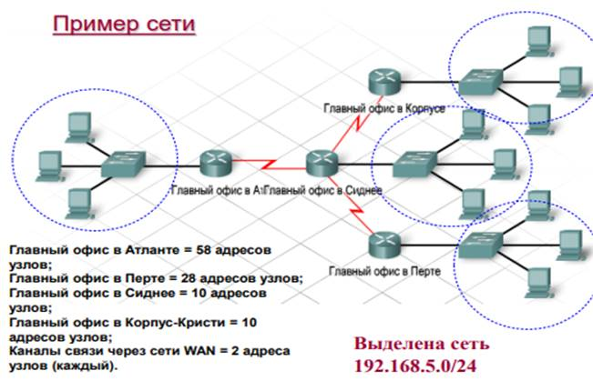
VLSM - технология, которая позволяет сетевому админу разбивать адресное пространство IP сети на подсети неравных размеров, в отличие от простого разбиения. Преимущества:
1)позволяет эффективно использовать адресное пространство; 2)позволяет использовать маски подсети разной длины; 3)разбивает блок адресов на менее крупные блоки; 4)позволяет суммировать маршруты; 5)обеспечивает большую гибкость при конструировании сети; 6)поддерживает иерархические корпоративные сети. (здесь должна быть табличка из 5 лабы и нарисованный по ней кружочек->) Метод круга предотвращает назначение уже выделенных адресов и позволяет избежать назначения перекрывающихся диапазонов адресов.
к вопросам13.Категории IP-адресов. Одноадресные, широковещательные и многоадресные рассылки.
Типы IP-адресов: 1. Unicast (адресует отдельный сетевой интерфейс): адрес одноадресной рассылки чаще всего встречается в сети IP, пакет с одноадресным получателем предназначен конкретному узлу. 2.Broadcast (адресует все интерфейсы заданной подсети): в пакете широковещательной рассылки содержится IP-адрес получателя, где в отведенной узлу части есть только единицы (1), что означает, что пакет получат и обработают все узлы в локальной сети. 3.Multicast (адресует группу интерфейсов, возможно принадлежащих разным подсетям): адреса групповых рассылок позволяют источнику рассылать пакет группе устройств. Устройства, принадлежащие к многоадресной группе, получают ее IP-адрес. Диапазон таких адресов - от 224.0.0.0 до 239.255.255.255. Многоадресный MAC-адрес - это особое значение, которое в шестнадцатеричном формате начинается с 01-00-5E.
к вопросам
14.Способы назначения IP-адресов. Протокол DHCP.
IP-адреса могут назначаться узлам сети: 1)вручную администратором сети4 2)динамически - протокол DHCP (Dynamic Host Configuration Protocol). Способы назначения адресов: 1.Вручную: админ предоставляет DHCP-серверу информацию о соответствии IP-адресов физическим адресам или другим идентификаторам клиентов. Эти адреса сообщаются клиентам в ответ на их запросы к DHCP-серверу. 2. Статически: DHCP-сервер присваивает IP-адрес из пула наличных IP- адресов без вмешательства оператора. Границы пула назначаемых адресов задает админ при конфигурировании DHCP-сервера. Между идентификатором клиента и его IP-адресом существует постоянное соответствие, которое устанавливается в момент первичного назначения сервером DHCP IP-адреса клиенту. При всех последующих запросах сервер возвращает тот же самый IP-адрес. 3. Динамически: DHCP-сервер выдает адрес клиенту на ограниченное время – продолжительность аренды. Описание протокола: 1)протокол DHCP является клиент-серверным, то есть в его работе участвуют клиент DHCP и сервер DHCP; 2)передача данных производится при помощи протокола UDP, при этом сервер принимает сообщения от клиентов на порт 67 и отправляет сообщения клиентам на порт 68. Пиисвоение IP-адреса хосту происходит в 4 шага, в ходе которых хост посылает широковещ. запрос-исследование, получает предложение от всех DHCP-серверов в сети, выбирает один из предложенных серверов, посылает широковещ. ответ со своим выбором и получает подтверждение от выбранного сервера вместе с ранее предложенным адресом. DHCP-сервер может назначить клиенту не только его IP-адрес, но и другие параметры стека, необходимые для эффективной работы: маску, IP-адрес маршрутизатора по умолчанию, IP- адрес сервера DNS, доменное имя компьютера и др. DHCP-сервер 1)имеет статический адрес, 2)находится в одной подсети с клиентами, 3)имеет определенный пул адресов и временные параметры аренды.
к вопросам
15.Отображение IP-адресов на локальные адреса. Протокол ARP.
АRP - Address Resolution Protocol (протокол разрешения адреса). Работа протокола ARP начинается с просмотра ARP-таблицы (вывод: утилита arp -a). Каждая строка таблицы устанавливает соответствие между IP- адресом и МАС - адресом. Идея протокола: если узлу А необходимо связаться с узлом В и он знает IP-адрес узла В, но не знает его физического адреса, то он шлет широковещ. сообщение, в котором запрашивает физ.адрес узла В; все узлы принимают это сообщение, но только узел В отвечает на него, высылая в ответ свой физ.адрес узлу А, который, получив его, кэширует с тем, чтобы не запрашивать его повторно при следующих обращениях к узлу В. Этапы работы протокола: 1.Передача от протокола IP протоколу ARP сообщения с запросом МАС-адреса по известному IP-адресу. 2.Протокол ARP начинается с просмотра собственной ARP- таблицы. 3.Если среди содержащихся в ней записей отсутствует запрашиваемый IP-адрес, то ARP формирует ARP-запрос, вкладывает его кадр протокола Ethernet (если это сеть Ethernet) и широковещ. рассылает (распространение ARP-запроса ограничивается одной сетью, т.к. на пути широковещ. кадров барьером стоит маршрутизатор). 4.Все интерфейсы сети получают ARP-запрос и направляют его «своему» протоколу. ARP сравнивает указанный в запросе адрес IP с IP-адресом собственного интерфейса. 5.ARP, который констатировал совпадение, формирует ARP- ответ, в котором маршрутизатор указывает локальный адрес, соответствующий адресу IP своего интерфейса, и отправляет его запрашивающему узлу.
к вопросам16.Протокол IP (структура заголовка). Фрагментация IP.
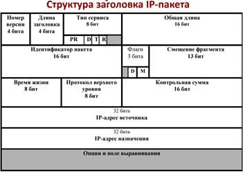Протокол межсетевого взаимодействия (Internet Protocol, IP): 1)обеспечивает передачу дейтаграмм от отправителя к получателям через объединенную систему компьютерных сетей (между сетями); 2)не устанавливает соединение; 3)не даёт гарантии доставки и сохранения порядка доставки; 4)обрабатывает каждый IP-пакет как независимую единицу, не имеющую связи ни с какими другими IP-пакетами; 5)способен выполнять динамическую фрагментацию пакетов при передаче их между сетями с различным максимальным размером кадра. (описание рисунка) Поле Тип сервиса используется для управления приоритетом (качеством сервиса). Биты D,T,R определяют желаемый тип маршрутизации. DF (Do not Fragment) - фрагментация запрещена. MF (More Fragments) - фрагмент-продолжение - устанавливается 1 во всех фрагментах, кроме последнего, в последнем 0. Идентификатор пакета используется для распознавания пакетов, образовавшихся путем фрагментации исходного пакета, все фрагменты одного пакета должны иметь одинаковое значение этого поля. Поле смещения фрагмента несет информацию о положении фрагмента относительно начала поля данных исходного нефрагментированного пакета, смещение задается в байтах и должно быть кратно 8 байт.Поле время жизни пакета (TTL – Time To Live) исключает бесконечно циркуляцию пакета по некоторому пути в сети и её перегрузку. В поле Протокол Верхнего Уровня кодируется номер «вложенного» протокола, данные которого может нести IP (транспортные (TCP, UDP), служебные (ICMP, IGMP, EGP, OSPF), протоколы сетевой защиты (AH и ESP) и «себя» (IP-IP инкапсуляция), IPv6). Контрольная сумма заголовка пакета - единственная проверка целостности собственной служебной информации, которую обеспечивает IP. Особенность протокола IP: динамическая фрагментация пакетов при передаче их между сетями с различными максимально допустимыми значениями длины поля данных кадров (Maximum Transmission Unit, MTU), значения которых зависят как от протокола, так и от настройки сетевых интерфейсов.
к вопросам17.Маршрутизация. Таблицы маршрутизации (основные компоненты).
Маршрутизация – выбор пути передачи пакетов между двумя конечными узлами в составной сети. Задача маршрутизации: выбор маршрута для передачи от отправителя к получателю. Основные цели маршрутизации в обеспечении: 1)минимальной задержки пакета при его передаче от отправителя к получателю; 2)максимальной пропускной способности сети; 3)максимальной защиты пакета от угроз безопасности содержащейся в нем информации; 4)надежности доставки пакета адресату; 5)минимальной стоимости передачи пакета адресату. Задачу выбора маршрута решают маршрутизаторы, а также конечные узлы на основе таблицы маршрутизации (ТМ) Метрика: 1)число участков маршрута; 2)полоса пропускания; 3)скорость передачи; 4)вероятность задержек; 5)надежность. Расстояние для сетей, непосредственно подключенных к портам маршрутизатора, принимается равным 0, иногда 1. Источники и типы записей в ТМ: 1) программное обеспечение стека TCP/IP (протокол ICMP), создающее минимальную ТМ, содержащую записи о непосредственно подключенных сетях, маршрутизаторах по умолчанию, адресах особого назначения; 2) администратор, непосредственно формирующий записи с помощью системных утилит (route), заданные вручную записи являются статическими и не имеют срока истечения жизни 3) протоколы маршрутизации, работающие на основе адаптивных алгоритмов (RIP или OSPF), такие записи всегда являются динамическими, т.е. имеют ограниченный срок жизни. Порядок просмотра таблиц маршрутизации: 1.Извлечение IP-адреса из пакета. 2.Просмотр каждой строки таблицы Маска (строки) & IP-адреса = N сети, сравнение с N сети (строки). 3.Действие с пакетом: •нет маршрута - отброс пакета; •есть совпадение - отправка пакета; •несколько совпадений - отправка пакета по наиболее оптимальному маршруту.
к вопросам18.Маршрутизация. Маршрутизация без масок. Маршрутизация с использованием масок постоянной длины. Маршрутизация с использованием масок переменной длины.
Маршрутизация – выбор пути передачи пакетов между двумя конечными узлами в составной сети. Задача маршрутизации: выбор маршрута для передачи от отправителя к получателю. Основные цели маршрутизации в обеспечении: 1)минимальной задержки пакета при его передаче от отправителя к получателю; 2)максимальной пропускной способности сети; 3)максимальной защиты пакета от угроз безопасности содержащейся в нем информации; 4)надежности доставки пакета адресату; 5)минимальной стоимости передачи пакета адресату.
МБМ: основан на взаимодействии протокола IP с протоколами разрешения адресов (ARP). Метод ARP-прокси ARP-прокси – агент (посредник) протокола ARP, позволяющий маршрутизатору отвечать на ARP-запросы от имени удаленного хоста. IP-адреса источника и назначения остаются теми же при передаче дейтаграммы от узла к узлу, но MAC-адреса подставляются роутерами так, чтобы соответствовать определённому источнику и назначению в каждой сети. Маски постоянной и переменной длины: маски являются эффективным средством структуризации IP-сетей,мМаски одинаковой длины используются для деления сети на подсети равного размера, маски переменной длины – для деления сети на подсети разного размера.
к вопросам19.Трансляция сетевых адресов. (Технология NAT, NAPT)
Основная причина использования NAT – дефицит IP. Традиционная технология NAT позволяет узлам из частной сети прозрачным для пользователей образом получать доступ к узлам внешних сетей. Она подразделяется на технологии: 1)базовой трансляции сетевых адресов (Basic NAT): для отображения используются только IP-адреса; 2)трансляции сетевых адресов и портов (Network Address Port Translation (NAPT)): привлекаются дополнительно транспортные идентификаторы (порты).
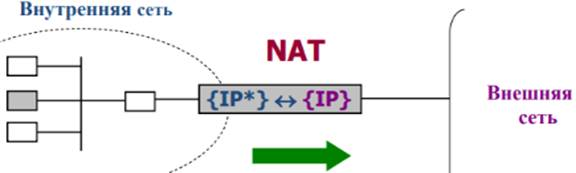<-{IP*}- множество частных адресов, которым разрешен выход во внешнюю сеть. {IP}- множество глобальных адресов внешнего интерфейса пограничного устройства.
Динамическое преобразование NAT происходит в том случае, если маршрутизатор присваивает IP- адреса из доступного пула внешних глобальных адресов. Статические преобразования гарантируют, что частный IP-адрес отдельного узла будет всегда преобразовываться в один и тот же зарегистрированный глобальный адрес, кроме того, благодаря этому адрес никогда не получит другой локальный узел. При настройке NAT для внешнего доступа следует использовать динамический вариант NAT, если устройство из внутренней сети должно быть доступно извне, используется статический вариант NAT. Трансляция адресов и номеров портов: если зарегистрированный пул IP-адресов организации очень небольшой или если у нее есть всего один IP-адрес, к общедоступной сети все равно могут одновременно подключаться несколько пользователей с использованием технологией NAPT. В режиме NAPT шлюз преобразует адрес локального источника и номер порта из пакета в один глобальный IP-адрес и уникальный номер порта выше 1024. Ответный трафик адресуется на преобразованный IP-адрес и номер порта узла и направляется на соответствующий внутренний адрес и номер порта, который получен из таблицы маршрутизатора, в которой находится список внутренних IP-адресов и номеров портов, которые преобразуются во внешние адреса.
к вопросам
20.CIDR и маршрутизация.
Технология бесклассовой междоменной маршрутизации CIDR (Classless Inter-Domain Routing). Основная идея: каждому провайдеру услуг Internet должен назначаться непрерывный диапазон в пространстве IP- адресов. При таком подходе адреса всех сетей каждого провайдера имеют общую старшую часть – префикс. Пусть имеется некоторое пространство IP-адресов с общим префиксом в k старших разрядов, оставшиеся n разрядов, составляющие переменную часть адреса, позволяют иметь диапазон в 2n адресов. Когда потребитель услуг обращается к поставщику услуг с просьбой о выделении некоторого количества адресов, то в имеющемся пуле вырезается непрерывная область соответствующего размера. Такому условию удовлетворяют только области, размер которых кратен 2, а границы выделяемого участка должны быть кратны требуемому размеру. Структуризация сети на основе масок называется разделением на подсети, при этом с помощью масок проявляется и обратный эффект — объединение подсетей. Чтобы направить весь суммарный трафик, адресованный из внешнего окружения в корпоративную сеть, разделенную на подсети, необходимо провести операцию агрегирования нескольких сетей в одну более крупную сеть. Необходимым условием эффективного использования технологии CIDR является локализация адресов, т.е. назначение адресов, имеющих совпадающие префиксы, сетям, располагающимся территориально по соседству. Только в таком случае трафик может быть агрегирован.
к вопросам21.Фрагментация IP-пакетов.
Особенность протокола IP: динамическая фрагментация пакетов при передаче их между сетями с различными максимально допустимыми значениями длины поля данных кадров (Maximum Transmission Unit, MTU), значения которых зависят как от протокола, так и от настройки сетевых интерфейсов. Фрагментация в узле-отправителе: деление сообщения на части внутри одного и того же стека внутри компьютера; протоколы верхнего уровня анализируют технологию нижнего уровня и определяют её MTU. Фрагментация сообщений в транзитных узлах: передача пакета из сети с большим в сеть с меньшим MTU; эти функции выполняет протокол IP. Алгоритм фрагментации (отправитель): 1)данные пакета делятся на части кратные 8 байтам, кроме последней, каждая из них помещается в новый пакет; 2)задает уникальное значение поля Идентификатор пакета; 3)устанавливаются флаги - признаки, связанные с фрагментацией; 4)смещение в байтах поля данных этого пакета от начала общего поля данных исходного пакета. Сборка фрагментов (получатель): 1)при приходе первого фрагмента получатель запускает таймер, определяющий максимальное допустимое время ожидания прихода остальных фрагментов; 2)если таймер истекает до прихода всех фрагментов, то все ресурсы, связанные с данным пакетом освобождаются, все фрагменты отбрасываются; 3)во всех случаях ошибок при фрагментации отправителю пакета посылается об этом сообщение с помощью протокола ICMP.
к вопросам
22.Протоколы транспортного уровня TCP и UDP. Порты и сокеты.
Данные, поступающие на транспортный уровень, организованы ОС в виде множества очередей в точках входов прикладных процессов. Такие системные очереди называются портами. Протокол TCP(Transmission Control Protocol) - потоковый транспортный сервис с надежной доставкой. Протокол UDP (User Datagram Protocol) - сервис негарантированной доставки единичных сообщений. Сокет - набор идентифицирующих параметров, которые однозначно определяет прикладной процесс в сети. Сокет имеет номер (адрес). Сокет = {IP-адреса хоста, номер порта}. Номер порта является локальным по отношению к хосту. Назначение номеров портов прикладным процессам осуществляется: 1)централизованно, если процессы представляют общедоступные службы Internet, выполняется организацией IANA; 2)локально, когда разработчик приложения связывает с портом произвольно выбранный числовой идентификатор. Номера портов разделены на три диапазона: стандартные , зарегистрированные и динамические или частные. Стандартные порты или назначенные (хорошо известные (well-known)) — это порты в диапазоне от 0 до 1023. Зарегистрированные порты — это порты в диапазоне от 1024 до 49151. Динамические или частные порты — это порты в диапазоне от 49152 до 65535. Адресация портов: 1)назначенные порты: 1-1023 – зарезервированы для базовых сервисов и приложений; 2)зарегистрированные порты: 1024 - 49151 – назначаются для пользовательских приложений; 3)динамические или частные порты: 49152-65535 - назначаются клиентским приложениям при инициализации соединений; 4)общие TCP/UDP порты: 53, 161, 531, 1433, 2948.
к вопросам23.Протоколы транспортного уровня TCP и UDP. Протокол UDP.
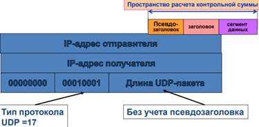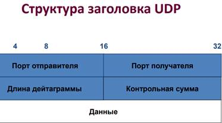Протокол TCP(Transmission Control Protocol) - потоковый транспортный сервис с надежной доставкой. Протокол UDP (User Datagram Protocol) - сервис негарантированной доставки единичных сообщений. UDP является одним из самых простых протоколов стека TCP/IP, не гарантирует доставку пакета, что позволяет ему гораздо быстрее и эффективнее доставлять данные для приложений, которым требуется большая пропускная способность линий связи, либо требуется малое время доставки данных. Сообщение протокола UDP называют пользовательской дейтаграммой. Основные особенности UDP 1)реализует взаимодействие в режиме без установления логического (виртуального) соединения; 2)организует пакетный тип передачи данных; 3)для идентификации партнеров по взаимодействию на транспортном уровне использует 16-битовые «номера портов»; 4)не гарантирует надежной передачи данных (возможна как потеря UDP-пакетов, так и их дублирование); 5)не имеет средств уведомления источника UDP-пакета о правильности/ошибочности в его приеме адресатом; 6)не обеспечивает правильный порядок доставки UDP- пакетов от источника к приемнику; 7)может гарантировать целостность данных в UDP-пакете за счет использования контрольной суммы. Длина UDP– длина в байтах данной дейтаграммы, включая как заголовок, так и данные. Min значение поля длины равно 8. Контрольная сумма охватывает заголовок, данные и псевдозаголовок, который предшествует UDP заголовку. Вычисление контрольной суммы необязательно (поле=0).Псевдозаголовок UDP добавляется к UDP-пакету перед вычислением контрольной суммы. Нужен для проверки корректности доставки и получателю не пересылается. UDP используется следующими важными протоколами прикладного уровня: 1)система доменных имен (DNS); 2)протокол динамической настройки узла (DHCP); 3)протокол маршрутной информации (RIP); 4)упрощенный протокол передачи файлов (TFTP); 5)онлайн-игры.
к вопросам24.Протокол TCP и ТСР-сегменты. Функции полей заголовка.
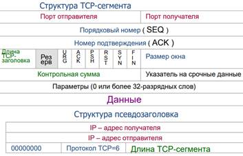Transmission Control Protocol, TCP. Основные функции: 1.Базовая передача данных. TCP рассматривает информацию, поступающую к нему от прикладных процессов, как неструктурированный поток байтов, поступающие данные буферизуются средствами TCP, для передачи на сетевой уровень из буфера «вырезается» некоторая непрерывная часть данных, которая называется сегментом и снабжается заголовком. 2.Обеспечение достоверности. TCP обеспечивает защиту от повреждения, потери, дублирования и нарушения очередности получения данных, для выполнения этих задач все октеты в потоке данных сквозным образом пронумерованы в возрастающем порядке, для каждого сегмента вычисляется контрольная сумма, позволяющая обнаружить повреждение, нумерация используется для упорядочения и обнаружения дубликатов. 3.Разделение каналов. Протокол TCP обеспечивает работу одновременно нескольких соединений, каждый прикладной процесс идентифицируется номером порта, заголовок TCP-сегмента содержит номера портов процесса-отправителя и процесса-получателя, Сокет уникально идентифицирует прикладной процесс в Интернет. 4.Управление соединением. Соединение- это совокупность информации о состоянии потока данных, включающая сокеты, номера посланных, принятых и подтвержденных октетов, размеры окон.
«Порт отправителя» и «Порт получателя» - номера портов процесса-отправителя и процесса-получателя. Порядковый номер – номер первого байта данных в сегменте, определяет смещение сегмента относительно потока отправляемых данных. Номер подтверждения - максимальный номер байта в полученном сегменте, увеличенный на единицу. Поле Длина TCP-заголовка означает размер TCP-заголовка+псевдозаголовок. Поле Размер окна сообщает, сколько байт может быть послано после байта, получившего подтверждение. Указатель срочности – указывает на конец данных, которые необходимо срочно принять, несмотря на переполнение буфера. Поле Параметры предоставляет дополнительные возможности, не покрываемые стандартным заголовком, может вообще отсутствовать. Поле Контрольная сумма содержит контрольную сумму заголовка, данных и псевдозаголовка. Флаги (биты управления) •URG – срочная передача данных; •ACK – подтверждение приема; •PSH – запрос на отправку сообщения без ожидания заполнения буфера; •RST – переустановление соединения; •SYN – синхронизация потоков; •FIN– окончание потока данных.
к вопросам25.Установление логического соединения в протоколе TCP. Оконное управление потоком.
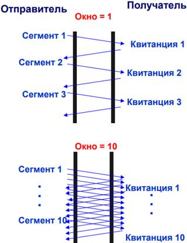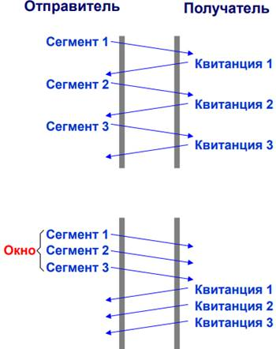Если отправлять сегменты только после поступления, пропускная способность линии сильно падает из-за больших времен ожидания квитанций. Эффективность можно существенно поднять, если позволить отправителю высылать N сегментов до поручения квитанции на 1й сегмент из серии N. Число N называется [скользящим] окном, а этот механизм – оконным управлением потоком Изменение размера окна позволяет эффективно управлять интенсивностью потока данных. При N=1 реализуется последовательная передача сегмент-квитанция. При больших N реализуется практически непрерывный дуплексный поток сегментов и квитанций. Механизм оконного управления потоком используется в TCP/IP для управления загрузкой сети (при перегрузке производится уменьшение окон передающих трафик узлов).
к вопросам26.Основные понятия маршрутизации. Маршрутизация в Интернет.
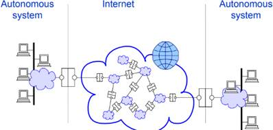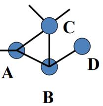Статическая маршрутизация: данные вводятся сетевым админом. Динамическая маршрутизация: информация поступает от соседних маршрутизаторов по протоколу динамической маршрутизации. Автономная система - это сеть, построенная на основе одного и нескольких префиксов IP для одной или нескольких подсетей и имеющая единую и строгую политику маршрутизации. Архитектурно задача динамической маршрутизации в Интернет делится на два уровня: 1)маршрутизацию внутри автономных систем; 2)маршрутизацию между автономными системами. Типы автономных систем (AS): Многоинтерфейсная AS имеет соединения с более чем одним Интернет-провайдером (не является транзитной)(на рис. C). Ограниченная AS имеет единственное подключение к одной внешней автономной системе (на рис. D) Транзитная AS пропускает через себя транзитный трафик сетей, подключенных к ней. Для обмена информацией о внешних маршрутах каждой AS присваивается уникальный номер, зарегистрированный в InterNIC. Для локального построения AS зарезервирован следующий диапазон номеров: 64512 – 65535.
к вопросам27.Протоколы внутренней и внешней маршрутизации.
Протоколы маршрутизации, осуществляющие маршрутизацию между автономными системами называют Exterior Routing Protocols, маршрутизацию внутри автономных систем осуществляют Interior Routing Protocols. Протоколы внутренней маршрутизации: 1)Routing Information Protocol (RIP) - прост (минимизирует путь только по числу хопов), ограничен (максимальная длина пути – 16 хопов), получил широкое распространение в малых сетях; 2)Interior Gateway Routing Protocol (IGRP) - определяет путь с учетом скорости линий и суммарной задержки); 3)Enhanced IGRP (EIGRP) - более эффективен, м.б. использован для маршрутизации не только IP; 4)Open Shortest Path First (OSPF) - гибок, эффективен, поддерживает маски сетей переменной длины, развитой междоменный иерархический протокол, разработанный взамен RIP; 5)Integrated intermediate System to Intermediate System protocol (IS-IS) - междоменный иерархический протокол, похож на OSPF, работает через множество LAN- и WAN-подсетей, двухточечные соединения, поддерживает протоколы OSI. Протоколы внешней маршрутизации: 1)Exterior Gateway Protocol (EGP) - обеспечивает динамическую маршрутизацию, очень прост, ограничен, исходит из предположения, что автономные системы подключены к древовидной топологии, не использует метрик; 2)Border Gateway Protocol (BGP) - работает в произвольных топологиях, исключает циклы, использует метрики, высоко масштабируем.
к вопросам28.Дистанционно-векторные алгоритмы и протоколы маршрутизации.
ДВА (маршрутизация по вектору расстояний). Два основных критерия: 1)расстояние – насколько удалена сеть от данного маршрутизатора; 2)вектор – в каком направлении следует пересылать пакеты для данной сети.
ДВА (Distance Vector Algorithms, DVA): широковещательная рассылка ТМ, метрика: число промежуточных маршрутизаторов (нет точной топологической картины сети, протоколы на базе векторов расстояния периодически проходят всю таблицу маршрутизации). Алгоритм состояния связей (Link State Algorithms, LSA): построение графа связей и обмен информацией об изменениях, метрика: оценка качества связи в данной сети (на данном физическом канале)(необходимость построения графа сети в каждом узле, протоколы на базе состояния канала передают обновления только при изменении состояния канала).
ДВП. Общая схема работы: 1.Каждый маршрутизатор периодически широковещательно рассылает информацию о расстоянии от себя до всех известных ему сетей (“вектор расстояний”). 2.В начальный момент времени рассылается информация только о тех сетях, к которым маршрутизатор подключен непосредственно. 3.Каждый маршрутизатор, получив от кого-либо вектор расстояний, корректирует уже имеющиеся у него данные о достижимости сетей или добавляет новые, указывая маршрутизатор, от которого получен вектор, в качестве следующего маршрутизатора на пути в данные сети. 4. Через некоторое время алгоритм сходится и все маршрутизаторы имеют информацию о маршрутах до всех сетей. Примеры протоколов: ДВП(Distance Vector Routing Protocol, DVRP) - RIP, IGRP; протоколы маршрутизации по состоянию каналов связи (Link State Routing Protocol, LSRP) - OSPF, IS-IS.
к вопросам29.Протокол RIP. Достоинства и недостатки.
Если сеть однородна, то есть все каналы имеют равную пропускную способность и примерно равную загрузку, что типично для небольших локальных сетей, то число шагов до цели является разумной оценкой пути (метрикой). Таблица маршрутизации RIP содержит по записи на каждый маршрут и включает в себя: 1)IP-адрес места назначения; 2)IP-адрес ближайшего маршрутизатора по пути к месту назначения; 3)метрика маршрута; 4)таймеры маршрута. Основные характеристики RIP: 1)дистанционно-векорный протокол маршрутизации; 2)использует число участков маршрута в качестве метрики для выбора маршрута; 3)относит метрики выше 15 к недостижимым маршрутам; 4)по умолчанию рассылает содержимое таблицы маршрутизации каждые 30 секунд. Алгоритм обновления RIP-таблицы: Получение RIP-сообщения - увеличение метрики для каждой записи сообщения на 1 - сравнение записей RIP-сообщения и существующей RIP- таблицы: – если метрика в сообщении меньше метрики в RIP- таблице, то обновляются запись и таймер; – если записи с доступным маршрутом нет, то запись добавляется; – если записи с доступным маршрутом есть, то таймер перезапускается; – в любом другом случае – запись из RIP-сообщения игнорируется. Все сообщения протокола состоят из заголовка фиксированной длины и следующего за ним списка сетей, которые могут быть достижимы с использованием данного передающего маршрутизатора. RIP имеет два типа сообщения: запрос и ответ. Запрос: маршрутизатор запрашивает у соседей их маршрутные таблицы или данные об определенном маршруте; ответ: рассылка вектора расстояний. Таймеры RIP: периодический – таймер корректировки маршрутизации (по умолч. 30c); истечения срока – таймер недействительных маршрутов (по умолч. 180c); сбора мусора(по умолч. 120c). RIP-проблемы: 1)медленная сходимость: изменения, произошедшие на одном из участков сети, распространяются очень медленно через остальные сети (один из методов разрешения – счетчик участков до 15); 2)циклические маршруты: в протоколе нет механизмов выявления замкнутых маршрутов. (методы разрешения: 1)разделение горизонта – это механизм, препятствующий посылке информации тому маршрутизатору, от которого эта информация получена; 2)принудительные обновления - если маршрутизатор получает информацию о изменении конфигурации сети, то он не ожидает очередного срока пересылки обновлений, а посылает update через некоторое небольшое случайное время). Версии протокола RIPv1 и RIPv2: 1.Шлюзы RIPv2 для обмена маршрутной информацией используют чаще многоадресную рассылку. RIPv2 использует широковещательную рассылку для обеспечения взаимодействия с RIPv1. 2.Используются дополнительные поля заголовка. 3.Аутентификация сообщений на основе произвольно выбранных текстовых полей. (Замеч: RIPv1 не отправляет сведения о маске подсети в форме обновлений маршрутов, и поэтому не поддерживает VLSM и CIDR.)
к вопросам30.Протокол EIGRP. Таблицы EIGRP
Enhanced Interior Gateway Routing Protocol. EIGRP – переработанный и улучшенный вариант IGRP, классифицируется как «гибридный» протокол, более прост в реализации и менее требователен к вычислительным ресурсам маршрутизатора. Основные особенности: 1)EIGRP-маршрутизатор обнаруживает своих соседей путем периодической рассылки сообщений "Hello", эти же сообщения используются для мониторинга состояния связи с соседом; 2)EIGRP использует комплексное значение метрики, вычисляемое на основании показателей пропускной способности и задержки при передаче данных в сети; 3)при получении от соседей векторов расстояний, маршрутизатор для каждой сети назначения не только выбирает соседа, через которого лежит кратчайший путь в эту сеть, но также запоминает и вероятных заместителей, коим становится маршрутизатор, объявивший метрику маршрута от себя до данной сети меньшую, чем полная метрика установленного маршрута. Мах число участков маршрута – 224. Общая метрика вычисляется с помощью значений bandwidth (пропускной способности) и delay (задержки). Metric=bandwidth+ delay. Соседи EIGRP - это другие маршрутизаторы, работающие по протоколу EIGRP в напрямую подключенных сетях с общим доступом. Маршрутизаторы EIGRP используют пакеты приветствий для обнаружения соседей и установления смежностей (связи для обмена информацией о маршруте между соседними маршрутизаторами и оконечными узлами) с соседними маршрутизаторами. Протокол EIGRP ведет три взаимосвязанные таблицы: 1)соседей; 2)топологии; 3)маршрутизации. В ТС отображены сведения о напрямую подключенных соседних маршрутизаторах, EIGRP регистрирует адрес только что обнаруженного соседа и подключенного к нему интерфейса. В таблице топологии отображаются все маршруты, полученные от каждого из соседей EIGRP, и определяются до четырех основных беспетлевых маршрутов к адресу назначения. Эти лучшие маршруты отображаются в таблице маршрутизации. Протокол EIGRP выполняет распределение нагрузки или отправляет пакеты по адресу назначения с помощью нескольких путей. Резервные маршруты, называемые возможными преемниками, отображаются в таблице топологии, но отсутствуют в таблице маршрутизации. Если не действует основной маршрут, лучшим маршрутом становится возможный преемник. В таблице маршрутизации отображены сведения о сетях, которые либо подключены непосредственно к интерфейсу маршрутизатора, либо доступны через другие маршрутизаторы, также указаны сети и интерфейсы других маршрутизаторов, через которые эти сети доступны.
к вопросам31.Протоколы состояния связей. Основные характеристики OSPF.
Протокол состояния канала связи (link-state): другим маршрутизаторам той же иерархии каждые 30 мин. рассылаются объявления о состоянии канала связи (Links State Advertisement – LSA), которые описывают состояние всех своих интерфейсов, метрики и другие параметры. Маршрутизаторы накапливают эту информацию и используют алгоритм Дейкстры для расчёта кратчайшего пути до каждого узла. Особенности: 1)отсутствие ограничений на размер сети, иерархическая структура сети; 2)несколько маршрутов в сторону одного узла → балансировка трафика; 3)аутентификация; 4)поддержка бесклассовых сетей (VLSM) и агрегации маршрутов; 5)передача обновлений маршрутов с использованием групповых адресов; 6)работа поверх IP (не UDP/TCP); 6)поддержка маршрутизации с учётом TOS (type-of-service). Протокол OSPF(Open Shortest Path First) - это открытый стандарт протоколов маршрутизации, разработанный для поддержки IP-трафика.
к вопросам32.Протокол OSPF. Зоны OSPF. Метрика OSPF.
Протокол OSPF(Open Shortest Path First) - это открытый стандарт протоколов маршрутизации, разработанный для поддержки IP-трафика. Для протоколов маршрутизации по состоянию канала требуется: 1)более сложный процесс планирования и конфигурации сети; 2)увеличенные ресурсы маршрутизатора; 3)больший объем памяти для хранения большого количества таблиц; 4)более высокая мощность процессора и вычислительная мощность для сложных расчетов маршрутизации. Маршрутизаторы, на которых выполняются протоколы OSPF, создают полную карту сети со своей точки обзора, которая позволяет им быстро определять беспетлевые альтернативные маршруты в случае отказа какого-либо сетевого канала; 5)для определения стоимости канала используется пропускная способность, канал с более высокой пропускной способностью обеспечивает более низкую стоимость. Протокол OSPF основывает метрику стоимости для отдельного канала на его пропускной способности или скорости. Стоимость = 100 000 000/(пропускная способность канала в бит/с). Метрикой для конкретной сети назначения является сумма стоимости всех каналов пути. Если существует несколько путей к сети, предпочтительным является путь с наименьшей стоимостью, и он заносится в таблицу маршрутизации. В пределах одной области маршрутизаторы OSPF сообщают информацию о состоянии своих соединений соседним маршрутизаторам, после получения объявлений с описанием всех каналов в пределах соответствующей области маршрутизатор OSPF использует алгоритм SPF для создания топологической древовидной схемы. Каждый маршрутизатор определяет себя в качестве корневого элемента своего собственного дерева SPF. Начиная от корневого элемента, дерево SPF определяет кратчайший путь к каждому месту назначения и общую стоимость каждого пути. Информация о дереве SPF хранится в базе данных топологии. Маршрутизатор заносит кратчайший путь к каждой сети в таблицу 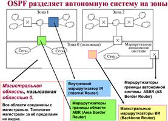маршрутизации. Типы маршрутизаторов: 1)внутренний - маршрутизатор, все интерфейсы которого принадлежат одной зоне, у них только одна база данных состояния каналов; 2)пограничный - соединяет одну или больше зон с магистральной зоной и выполняет функции шлюза для межзонального трафика, у него всегда хотя бы один интерфейс принадлежит магистральной зоне, для каждой присоединенной зоны маршрутизатор поддерживает отдельную базу данных состояния каналов; 3)магистральный (внутренний маршрутизатор интерфейсы которого принадлежат нулевой зоне, также является магистральным); 4)пограничный маршрутизатор автономной системы - обменивается информацией с маршрутизаторами, принадлежащими другим автономным системам, он может находиться в любом месте автономной системы и быть внутренним, пограничным или магистральным.
к вопросам
33.Протокол пограничного шлюза BGP. Общие принципы работы.
Border Gateway Protocol, BGP. Особенности: 1)поддерживает произвольную структуру связей между автономными системами; 2)передает маршрут достижимости - список автономных систем(АС), которые нужно пересечь для достижения некоторых сетей - для исключения петель; 3)поддерживает "бесклассовую" маршрутизацию, основанную на стратегии CIDR; 4)Таблица маршрутизации пересылается целиком только при инициализации соединения между маршрутизаторами, а затем пересылаются только обновления маршрутов. Протокол внешнего шлюза BGP: BGP-маршрутизаторы соседних АС устанавливают между собой соединения по протоколу ТСР и становятся BGP-партнерами, затем анонсируют друг другу path vectors, которые содержат адрес сети и список атрибутов, описывающих различные характеристики маршрута от маршрутизатора-отправителя в указанную сеть. Решение о приемлемости или неприемлемости полученного маршрута маршрутизатор-получатель принимает на основании данных, содержащихся в атрибутах пути, проанализировав их с точки зрения политики своей АС. 5)поддерживает "policy based" маршрутизацию; 6)выбор маршрутов для объявления в другие АС производится на основании данных о сетях+набора правил, задаваемых администратором системы; 7)в одной АС может быть несколько BGP-маршрутизаторов, которые должны поддерживать согласованность своих таблиц с помощью внутреннего протокола маршрутизации. Основной единицей информации, которой оперируют маршрутизаторы BGP, является маршрут, который характеризуется IP-адресами нескольких сетей назначения и путям к этим сетям. Путь - это последовательность промежуточных АС и IP-адрес пограничного маршрутизатора в АС, к которой принадлежит сеть назначения Вся маршрутная информация хранится в базе данных маршрутов.
к вопросам34.Система доменных имен DNS. Схемы разрешения имен DNS. Файл зоны DNS.
Домен – это множество хостов, объединенных в некую логическую группу под одним именем группы. DNS (Domain Name System) - это распределенная база данных, поддерживающая иерархическую систему имен для идентификации узлов в сети Internet. На прикладном уровне применяется символическая система адресации. Пространство символической адресации независимо от IP-адресации - проблема разрешения имен – преобразование символического имени в IP-адрес и обратно. Служба DNS предназначена для автоматического поиска IP-адреса по известному символьному имени узла. Доменная система отражает не физическое строение сети, а логическое разделение между организациями и их подразделениями. Имя поддомена – не более 63 символов. Общая длина до 255 символов. Схемы разрешения DNS-имен 1.Рекурсивная процедура: клиент обращается с запросом разрешения имени к одному из локальных DNS-серверов, если искомый домен входит в его сферу ответственности, то он сразу же возвращает клиенту авторитетную запись ресурса – запись, получаемую от официального источника. Записи, попадая на сервер имен, кэшируются. Авторитетная запись в отличие от кэшированной всегда считается верной. Если же домен является удаленным, то локальный DNS- сервер посылает запрос серверу домена верхнего уровня. Ответы также поэтапно передаются обратно. 2.Итеративная процедура: работу по поиску IP-адреса координирует DNS-клиент. Если после обращения к локальному серверу разрешение не найдено, то он сразу же информирует об этом клиента, сообщая при этом имя следующего сервера, которого можно спросить. Большинство серверов имен используют рекурсивную процедуру, итеративная процедура загружает клиента достаточно сложной работой. Файл зоны содержит стандартные записи ресурсов базы данных DNS для преобразования доменных имен хостов в данной зоне в IP-адреса, определения авторитетных DNS-серверов данной зоны, определения хостов-обработчиков почты для доменных имен в данной зоне и др. Файлы баз данных DNS состоят из стандартных записей ресурсов. Формат записи: Domain_name Time_to_Live Class Type Value. Domain_name – имя домена, к которому относится текущая запись; Time_to_Live – время в секундах, в течение которого запись может оставаться в кэше и считаться достоверной; Class – тип сети; Type – тип записи; Value – значение, которое зависит от типа записи. Обратной зоной называется домен специального вида. DNS - это индексированная база данных информации о компьютерах, где индексом служит доменное имя.
к вопросам
35.Web-служба. Протокол HTTP.
WEB-служба – отдельные независимые приложения многократного использования, которые представляют свои функции через Web-интерфейс. Web-службы позволяют приложениям или другим Web-службам совместно использовать данные и функции таким способом, при котором не имеет значения, как именно эти приложения выполняются, какую платформу, ОС или устройство они используют. Web-страницы или гипертекстовые документы (html- документы) - это текстовые файлы, размеченные тегами с помощью языка HTML (HyperText Markup Language), который позволяет форматировать текст веб страницы, размещать на ней графические объекты, рисунки, вставлять звукозапись и различные мультимедийные элементы, а также скрипты (JavaScript, VBScript), создавать гипертекстовые ссылки. Веб-клиент, называемый также браузером, или агентом пользователя веб-службы, представляет собой приложение, которое устанавливается на компьютере конечного пользователя и одной из важных функций которого является поддержание графического пользовательского интерфейса. Веб-сервер — это программа, хранящая объекты локально в каталогах компьютера, на котором она запущена, и обеспечивающая доступ к этим объектам по URL-адресам. HTTP (Hypertext Transfer Protocol, протокол передачи гипертекста) обеспечивает высокопроизводительный механизм передачи мультимедийной информации независимо от типа представленных данных. Программа-клиент (браузер) устанавливает TCP- соединение с портом 80 сервера, затем посылает запрос. После ответа клиент или сервер закрывают соединение. Статусная линия HTTP-ответа - поясняющие коды: • 1xx: информационные; • 2xx: успешно: - действие/запрос был успешно получен, понят и выполнен; • 3xx: перенаправление - указывает, какое действие должно быть выполнено, чтобы выполнить запрос; • 4xx: ошибка клиента - запрос содержит неправильный синтаксис или не может быть выполнен; • 5xx: ошибка сервера - Сервер не может выполнить правильный запрос, причина, как правило, в авторизации доступа к ресурсу. Существует также несколько статусных кодов.
к вопросам36.Протокол FTP. FTP-клиенты и серверы.
Протокол FTP (File Transfer Protocol) предназначен для передачи файлов между двумя узлами сети. Он предоставляет широкий набор команд для копирования файлов, а также для управления файлами и каталогами на удаленном компьютере: удаление файлов и каталогов, создание каталогов, переименование файлов, получение списка файлов с удаленного компьютера. В случае, если передача файла была прервана по каким-либо причинам, протокол предусматривает средства для докачки файла, что бывает очень удобно при передаче больших файлов. Один из старейших прикладных протоколов (1971 г.) Уязвим к перехвату сетевых пакетов (нет шифрования, пароль передаётся открытым текстом). Используются два соединения (два TCP порта): для передачи команд и для передачи данных. В предоставлении FTP-сервиса принимают участие две программные компоненты: 1)FTP-сервер - это программа, выполняющаяся на компьютере, предоставляющим FTP – сервис, она принимает команды по протоколу FTP и выполняет их; 2)FTP-клиент - это программа, выполняющаяся на компьютере пользователя, с ее помощью пользователь устанавливает соединение с FTP - сервером и передает ему команды: запрашивает файлы для скачивания, удаляет файлы, переименовывает их, и т.п. Общая схема работы протокола: FTP - сервер ожидает соединения от клиента на определенном порту, когда соединение установлено, клиент использует его для передачи команд серверу, а сервер для передачи ответов клиенту. Установив управляющее соединение с сервером, клиент должен провести процедуру авторизации: сообщить имя своей учетной записи и пароль.
к вопросам37.Протоколы электронной почты.
Сетевая почтовая служба (электронная почта) – это распределенное приложение, главной функцией которого является предоставление пользователям сети возможности обмениваться электронными сообщениями. Почтовый клиент - программа, помогающая составлять и посылать электронные сообщения, получать и отображать письма на компьютере пользователя (Outlook Express, The Bat, Mozilla Thunderbird). Почтовый сервер - программа, пересылающая сообщения из почтовых ящиков на другие серверы или на компьютер пользователя по запросу его почтового клиента. Протокол SMTP (Simple Mail Transfer Protocol- простой протокол передачи почты) обеспечивает как передачу сообщений в адрес одного получателя, так и тиражирование нескольких копий сообщений для передачи в разные адреса. Программы, использующие этот протокол: Outlook Express, Microsoft Mail, Lotus и т.д. По умолчанию TCP-протокол подключен к протоколу SMTP через порт 25. POP3 – это простейший протокол для работы пользователя со своим почтовым ящиком. Он позволяет только забрать почту из почтового ящика (на сервере) на компьютер клиента и удалить ее из почтового ящика на сервере. POP3-сервер не отвечает за отправку почты, он работает только как универсальный почтовый ящик для группы пользователей. POP3-протокол подключается к транспортному уровню TCP через 110-й протокол. Протокол IMAP4 (Internet Message Access Protocol, Version4 ) позволяет клиентам получать доступ и манипулировать сообщениями электронной почты на сервере. Существенным отличием протокола IMAP4 от протокола POP3 является то, что IMAP4 поддерживает работу с системой каталогов (или папок) сообщений, позволяет клиенту создавать, удалять и переименовывать почтовые ящики, проверять наличие новых сообщений и удалять старые . При работе с протоколом TCP, IMAP4 использует 143- й порт.
к вопросам
38.Основы безопасности IP-сетей. Фильтрация трафика. Листы доступа.
Протоколы IP-маршрутизации создают таблицы маршрутизации, на которых любой узел составной сети может обмениваться информацией с другим узлом. Благодаря этому принципу дейтаграммных сетей каждый пользователь Интернета может получать доступ к любому публичному сайту. Однако такая всеобщая достижимость узлов и сетей не всегда отражает потребности их владельцев, поэтому многие маршрутизаторы поддерживают средства фильтрации пользовательского трафика, а также фильтрации объявлений протоколов маршрутизации, что позволяет дифференцированно управлять достижимостью узлов. Под фильтрацией понимается нестандартная обработка IP-пакетов маршрутизаторами, приводящая к отбрасыванию некоторых пакетов или изменению их маршрута В списках контроля доступа содержится одна или более инструкций, каждая инструкция либо разрешает, либо запрещает трафик на основе указанных параметров. После создания списка контроля доступа его необходимо применить к интерфейсу, чтобы задействовать его. ACL-список предназначен для фильтрации входящего или исходящего трафика, проходящего через интерфейс. Входящее или исходящее направление всегда рассматривается с точки зрения маршрутизатора. Трафик, поступающий через интерфейс, является входящим, а отправляемый через интерфейс – исходящим. Потенциальные проблемы ACL-списков: 1)дополнительная нагрузка на маршрутизатор для проверки всех пакетов означает меньшее время на фактическую пересылку пакетов; 2)плохо организованные ACL-списки создают даже еще большую нагрузку на маршрутизатор и могут нарушить работоспособность сети; 3)неправильно размещенные ACL-списки блокируют допустимый трафик и разрешают запрещенный. Существует три типа ACL-списков: 1.Стандартные ACL-списки - определяются по присваиваемым им номерам, номера из диапазона от 1 до 99 и от 1 300 до 1 999 присваиваются спискам доступа, разрешающим или блокирующим IP-трафик. 2.Расширенные ACL-списки - им присваиваются номера из диапазона от 100 до 199 и от 2 000 до 2 699; 3)именованные ACL-списки - при их настройке маршрутизатор IOS использует режим подкоманды NACL.